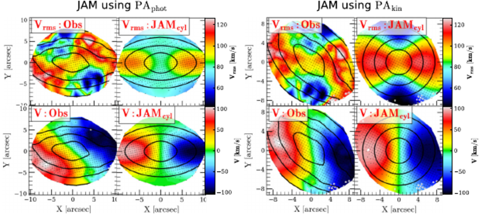

Featured paper
MaNGA DynPop - I. Quality-assessed stellar dynamical modelling from integral-field spectroscopy of 10K nearby galaxies
Zhu et al. present the dynamical backbone of the DynPop project: Jeans Anisotropic Models for the full MaNGA DR17 galaxy sample. The paper provides quality-assessed masses, mass-to-light ratios, density profiles, and dark matter quantities, while testing how different mass-model assumptions affect the inferred galaxy structure.
ADS paper